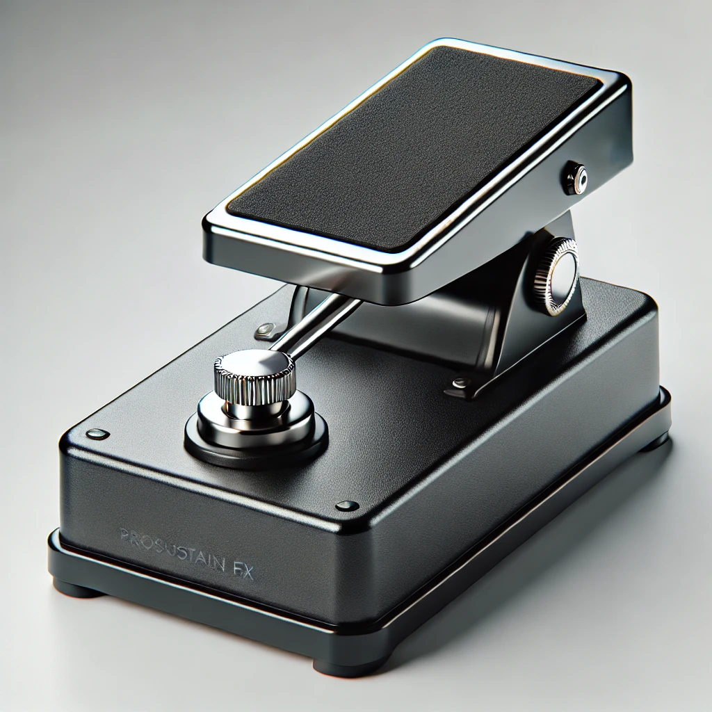

Produktdetails

Keyboard-Pedal ProSustain FX
Preis: 24,99 €
Lieferzeit: 3-5 Werktage

Produktdetails
- Hochwertiges Sustain-Pedal für Keyboards und Digitalpianos
- Rutschfeste Basis für stabilen Stand, auch auf glatten Böden
- Kompatibel mit den meisten Keyboards und Synthesizern
- Robustes Design mit langlebigem Trittmechanismus
- Kabel mit 6,3 mm Klinkenstecker für Plug-and-Play-Anschluss
- Zielgruppe: Pianisten, Keyboardspieler und Musikproduzenten
Zurück zu den Produkten
⬆